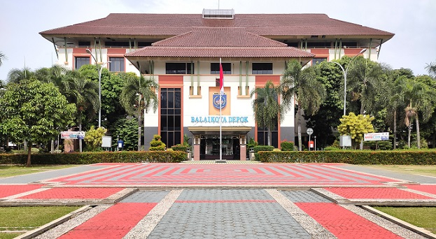

Balai Kota Depok

Apa Itu Balai Kota Depok dan di dalamnya?
Balai Kota Depok adalah pusat pemerintahan Kota Depok, Jawa Barat, yang berfungsi sebagai tempat
kerja Walikota dan berbagai dinas daerah. Berlokasi di Jl. Margonda Raya No.54, Pancoran Mas, tempat
ini kini juga populer sebagai Ruang Terbuka Hijau (RTH) publik yang asri.
Berikut Yang Ada didalam atau sekitar wilayah BalaiKota Depok :
- Pusat Administrasi & Pemerintahan: Gedung Dibaleka I & II yang merupakan kantor Walikota, Wakil Walikota, dan kantor berbagai dinas pemerintahan.
- Mall Pelayanan Publik (MPP): Terletak di Gedung Dibaleka II Lantai 1, menyediakan layanan dokumen kependudukan (Disdukcapil), perizinan, dan lainnya.
- Depok Open Space (DOS): Ruang terbuka publik di depan Balai Kota yang dilengkapi tribun, taman, panggung, dan sarana aktivitas warga.
- Taman Balai Kota: Area hijau dengan lanskap taman bunga, pohon teduh, jogging track, dan playground untuk bersantai.
- Gapura Kujang: Gapura dengan desain khas Sunda (kujang) yang menjadi ikon pintu masuk.
Sejarah Singkat Balai Kota Depok
Balaikota Depok berdiri seiring resminya Kota Depok menjadi Kotamadya Daerah Tk. II pada 27 April 1999
berdasarkan UU No. 15 Tahun 1999. Sebelumnya, Depok berstatus Kota Administratif (1982-1999) di bawah
Kabupaten Bogor. Drs. H. Badrul Kamal dilantik sebagai Wali Kota pertama saat peresmian kota tersebut, menandai beroperasinya pemerintahan pusat kota.
Berikut adalah poin-poin penting sejarah pemerintahan/balaikota Depok:
- 18 Maret 1982: Peresmian Kota Administratif Depok oleh Mendagri H. Amir Machmud, yang menjadi awal pengelolaan wilayah secara mandiri di bawah Kabupaten Bogor.
- 27 April 1999: Pembentukan Kotamadya Daerah Tk. II Depok (berpisah dari Kabupaten Bogor) yang menandai berdirinya kantor walikota definitif.
- Wali Kota Pertama: Drs. H. Badrul Kamal (menjabat 1999-2005), memimpin jalannya pemerintahan awal setelah Depok menjadi kota madya.
- Perkembangan: Dari kota administratif dengan 3 kecamatan menjadi kota madya yang berkembang pesat dengan 11 kecamatan saat ini (per 2024), dengan pusat pemerintahan di Jl. Margonda Raya.
Lokasi
Jl. Margonda Raya No.54, Kecamatan Pancoran Mas,
Kota Depok, Jawa Barat.
View More